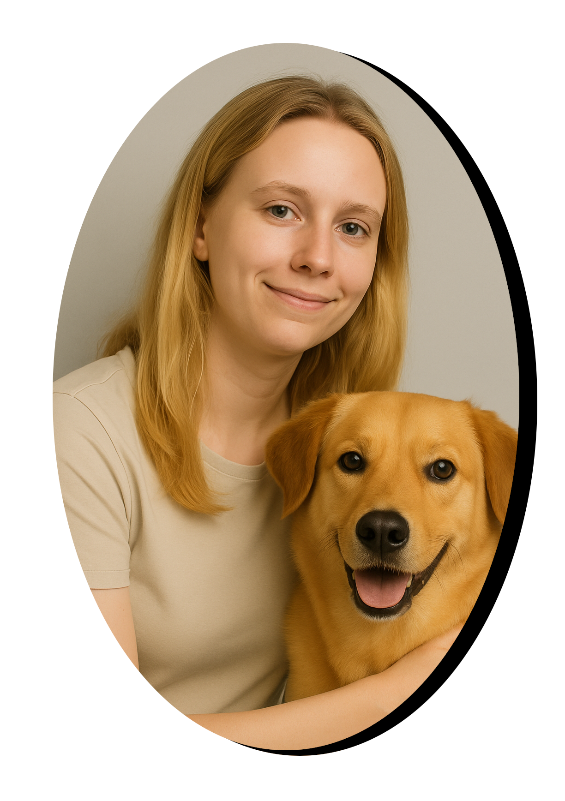
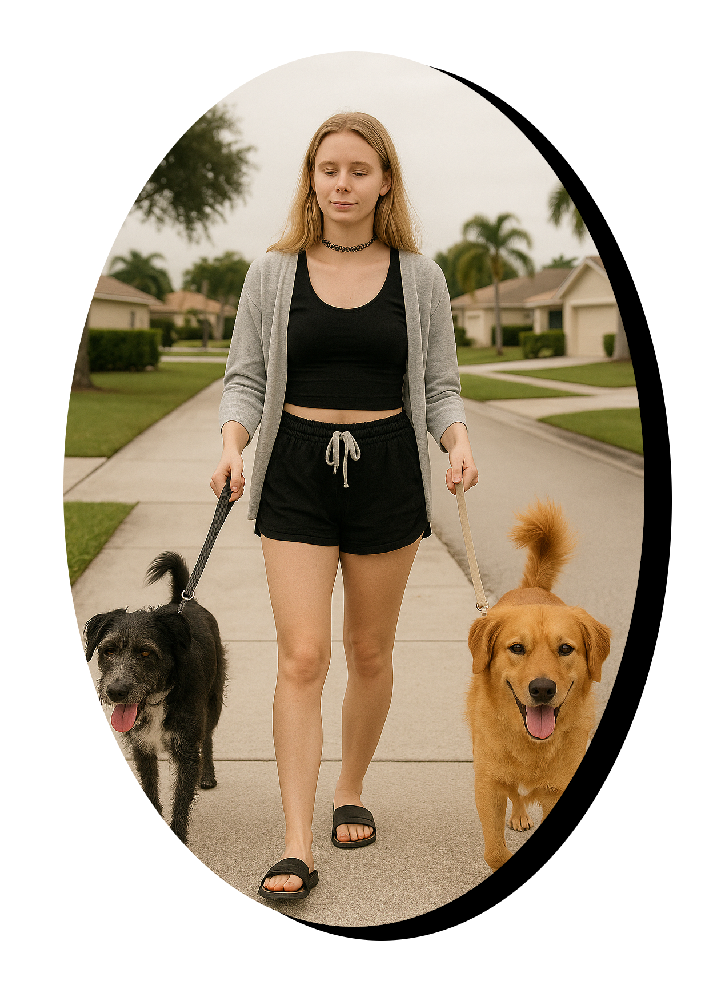

Brooke's Trusty Paw Co.
Professional Pet & Home Care
Welcome to Brooke's Trusty Paw Co.! I provide professional pet and home care services with a personal touch in the Palm Beach, FL area. My mission is to ensure your pets are happy, comfortable and healthy while you're away.

About Me
My story and passion for animals
Hi, I'm Brooke! I have a passion for animals and a commitment to providing the best care possible. I was born and raised in Wellington, FL and have always had a love for animals. With years of experience in a vet clinic and petsitting, I understand the unique needs of each pet and strive to create a safe and loving environment for them. I mostly take care of dogs and cats but I have experience with birds, fish, snakes, other reptiles and other furry animals too.

Pettsitting Services
Petsitting
I do in-home petsitting visits for your furry friends. Visits include feeding, walking, playtime, and administering medication if needed. Our visits range from 30 minutes to 1 hour, depending on your pet's needs.
Overnight Stays
Sometimes your pets just need a little extra care while you're away. I offer overnight stays in your home to ensure your pets are comfortable and secure. This service includes all the benefits of petsitting, plus overnight companionship.